스포츠경영관리사 (2017-09-23 기출문제)
1과목: 스포츠 산업론
1. 스포츠입장권의 가격의 일반적 특성과 가장 거리가 먼 것은?
- 스포츠입장권 가격은 수요가 탄력적인 시장상황에서 매우 쉽게 변경될 수 있다.
- 스포츠입장권 가격은 가장 강력한 경쟁도구로 시장상황에 즉각적으로 대응할 수 있다.
- 스포츠입장권 가격은 소비자 매우 빠르게 전달되어 인식을 변화시킨다.
- 스포츠입장권 가격은 정형화된 체계를 구축하기 용이하다.
(정답률: 69%)

2. 스포츠산업을 재화와 서비스의 특징에 따라 분류할 때, 다음 중 같은 영역에 속하지 않는 것은?
- 프로구단
- 대한체육회
- 스포츠전문지
- 스포츠센터
(정답률: 55%)
3. 스포츠산업 진흥법령상 사업자단체 설립인가 요건이 아닌 것은?
- 업종별 사업자가 100분의 50 이상 참여할 것
- 외국과의 수출관련 협력체계가 구축되어 있을 것
- 사업계획서가 스포츠산업 진흥의 목적에 부합할 것
- 사업 수행을 위한 자금 조달 방안이 있을 것
(정답률: 75%)
4. 스포츠소비자의 구매의사결정과정에 영향을 미치는 관여도에 대한 설명으로 틀린 것은?
- 관여도의 크기에 따라 고관여도와 저관여도로 구분할 수 있다.
- 소비자의 제품에 대한 관여도의 크기는 상대적이지만 개인별, 제품별, 상활별로는 절대적인 개념이 적용된다.
- 여러 대안들에 대한 구체적인 평가를 거치지 않고 과거의 구매대안을 반복적으로 구매하는 것은 일상적 문제해결과정(저관여)에 해당한다.
- 일반적으로 수준에 따라 관여도에 달라진다.
(정답률: 72%)
5. 참여스포츠산업의 소비시장 규모를 거시적으로 예측할 때 가장 관계가 적은 변인은?
- 1인당 소득
- 대학진학률
- 노동시간
- 고령화지수
(정답률: 82%)
6. 국민체육진흥법상 체육지도자에 해당하지 않는 사람은?
- 노인스포츠지도사 자격지도사
- 스포츠건강관리지도사 자격취득사
- 장애인스포츠지도사 자격취득사
- 건강운동관리자 자격취득자
(정답률: 60%)
7. 관람스포츠 산업에서 판매되는 다양한 상품 중 표적으로 하는 주요 고객의 성격이 다른 하나는?
- 경기장 명칭사용권
- 영구좌석분양권
- 유니폼 광고권
- 리그타이틀 스폰서십
(정답률: 69%)
8. 스포츠비즈니스 관점에서 볼 때 한국 및 미국 프로야구리그가 채택하고 있는 포스트시즌 제도와 유럽축구에서 채택하고 있는 승강제도가 갖고 있는 공통점은?
- 선수시장의 안정을 위한 역할
- 구단 간의 빈부격차를 줄여주는 역할
- 흥행을 위해 팀 간 전력균형을 유지하는 역할
- 리그 중반 일탈하기 쉬운 팬들의 관심을 유지하는 역할
(정답률: 60%)
9. 스포츠산업 진흥법령상 문화체육관광부장관과 지방자치단체의 장이 스포츠산업 전문인력 양성기관에 보조할 수 있는 경비가 아닌 것은?
- 전문인력 양성교육 프로그램 운영에 필요한 비용
- 전문인력 양성교육에 대한 조사ㆍ연구 비용
- 교육자료의 개발 및 보급에 필요한 비용
- 교육장소 부지 매입 및 장비 구입비
(정답률: 82%)
10. 스포츠시장에 제공되는 스포츠제품 중 비즈니스 주체의 성격이 다른 하나는?
- TV중계권
- 선수초상권
- 골프장회원권
- 경기관람권
(정답률: 59%)
11. 스포츠 복지서비스인 국민체력 100의 청소년기 체력측정 항목에 해당하지 않는 것은?(오류 신고가 접수된 문제입니다. 반드시 정답과 해설을 확인하시기 바랍니다.)
- 30m 왕복오래달리기
- 상대악력
- 6분 걷기(m)
- 눈-손 협응력 검사
(정답률: 73%)
12. 다음 사례의 소비자 관여도 유형으로 가장 적합한 것은?
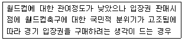
- 행동적 관여도
- 정서적 관여도
- 지속적 관여도
- 상황적 관여도
(정답률: 76%)
13. 다음 중 스포츠산업의 특성과 가장 거리가 먼 것은?
- 오락성 중심 산업
- 공간입지 중시 산업
- 자원재생 가능 산업
- 감동 및 건강관련 산업
(정답률: 75%)
14. 다음 중 일반적 스포츠제품 유통경로의 단계수가 증가하는 경우는?
- 고객의 최소판매단위에 대한 유통서비스 요구가 높을수록
- 고객이 대형유통업체를 선호할수록
- 고객의 공간적 편의성에 대한 유통서비스 요구가 낮을수록
- 고객의 배달기간에 대한 유통서비스 요구가 낮을수록
(정답률: 66%)
15. 스포츠산업 진흥법령상 스포츠 산업에 관한 기본적이고 종합적인 중장기 진흥기본계획에 포함되어야 하는 사항이 아닌 것은?
- 해당 연도의 산업추진 방향
- 스포츠산업 활성화를 위한 기반 조성에 관한 사항
- 스포츠산업의 경쟁력 강화에 관한 사항
- 국가 간 스포츠산업 협력에 관한 사항
(정답률: 59%)
16. 재화와 구분되는 서비스로서 스포츠상품의 특성만으로 짝지어진 것은?
- 비분리성-이질성-소멸성-지속성
- 소멸성-저력성-무형성-이질성
- 무형성-영구성-이질성-비분리성
- 소멸성-비분리성-이질성-무형성
(정답률: 73%)
17. 스포츠가 대중문화로 편입되어 상품화된 요건에 대한 설명과 가장 거리가 먼 것은?
- 교통과 커뮤니케이션 발달로 도시공간의 형성과 발전이 이루어져, 대중들은 스포츠를 쉽게 접하고 이용할 수 있는 여건을 갖게 되었다.
- 미디어가 스포츠를 상품화하여 보도함으로써, 스포츠를 경기자중심에서 관전자중심으로 변화시켰다.
- 미디어의 영향으로 스포츠는 대중친화력과 대량 소비에 적합하도록 디자인되고 구조화되어 새로운 소비윤리를 창출하는 가치 있는 상품으로 전환되었다.
- 스포츠의 순수성 및 아마추어리즘 같은 전통적 가치와 의미 불변성이 대중의 지지를 얻어 대중문화 속으로 편입되었다.
(정답률: 59%)
18. 프로스포츠 시장에서 선수의 역할에 대한 설명으로 가장 적합한 것은?
- 선수가 근로자의 역할을 담당할 때는 초상권과 연계하여 설명된다.
- 선수가 기계 등과 같은 자본재의 역할을 담당할 때는 선수노조와 연계하여 설명된다.
- 선수가 기업의 역할을 담당할 때는 연봉과 연계하여 설명된다.
- 선수가 상품의 역할을 담당할 때는 트레이드와 연계하여 설명된다.
(정답률: 53%)
19. 세계 각국의 정부 및 자치단체의 스포츠이벤트 유치를 위해 시설 등에 투자하여 얻고자하는 혜택과 가장 거리가 먼 것은?
- 해당 지역경제 활성화
- 해당 지역주민의 심리적 소득
- 도시 이미지 강화
- 기업 인지도 제고
(정답률: 58%)
20. 스포츠 콘텐츠 유통경로의 다양화와 가장 밀접한 관계가 있는 것은?
- 경기장건설 기술의 발전
- 광고기법의 발전
- 선수 경기력의 향상
- 정보통신기술의 발전
(정답률: 71%)
21. 다음()에 알맞은 것은?
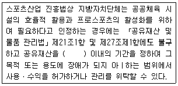
- 10년
- 15년
- 20년
- 25년
(정답률: 63%)
22. 스포츠소비자의 구매 의사결정과정으로 가장 적합한 것은?
- 정보탐색-선택대안의 평가-문제인식-구매행위
- 평가-정보탐색-문제인식-선택대안의 평가-구매후의 평가
- 문제인식-정보탐색-선택대안의 평가-구매행위-구매후의 평가
- 정보탐색-문제인식-선택대안의 평가-구매행위-구매후의 평가
(정답률: 72%)
23. 스포츠산업 성장에 관한 대내외 환경변화요인과 가장 거리가 먼 것은?
- 근로시간 단축과 가계소득 증가로 여가선용과 건강에 대한 대중의 관심증가
- 뉴미디어시대에 다양하게 발전된 미디어가 스포츠와 결합하여 재미있는 스포츠콘텐츠를 생산하여 대중의 흥미유발
- 소득증대와 프로스포츠 활성화로 참여스포츠 선호인구는 감소하고 관람 스포츠 선호인구는 증가
- 스포츠의 세계동질성으로 국가 간의 스포츠경쟁과 스포츠제품 세계화가 심화되어 스포츠 산업시장의 부가가치 증대
(정답률: 69%)
24. 스포츠제품을 핵심제품과 확장제품으로 구분할 때 핵심제품에 해당하는 것은?
- 스폰서십
- 스포츠시설
- 응원
- 경품권
(정답률: 72%)
25. 스포츠용품의 특정 판매지역이나 판매처를 한정하여 독점판매권을 부여하는 대신 다른 회사 제품의 취급을 제한하는 유통정책은?
- 개방적 유통정책
- 선택적 유통정책
- 배타적 유통정책
- 직판 정책
(정답률: 67%)
2과목: 스포츠 경영론
26. 다음 중 스포츠 조직의 직접금융을 통한 자본조달방법과 가장 거리가 먼 것은?
- 스포츠 기업이나 센터가 회원권을 판매한다.
- 스포츠 기업이 전자어음을 발행한다.
- 스포츠 기업이 스폰서십을 유치한다.
- 스포츠 조직이 회사채를 발행한다.
(정답률: 60%)
27. 스포츠에 대한 수요는 소득효과로 인해 발생한다. 소득효과와 대체효과에 대한 설명으로 틀린 것은?
- 소득효과는 소득이 늘어났으므로 스포츠의 수요가 늘어나는 경우이다.
- 대체효과는 스포츠에 대한 수요가 일반제품에 대한 수요로 대체되는 경우이다.
- 소득효과와 대체효과의 발생은 소비자의 내면적 심리상태에 의해 좌우되는 무차별곡선형태네 따라 달라진다.
- 소득수준이 향상된 후 스포츠에 대한 수요가 늘어나려면 대체효과가 소득효과보다 커야한다.
(정답률: 54%)
28. A프로구단의 총자본이 600억 원이고 당기순이익이 150억 원이라면 총자본순이익률은?
- 4%
- 15%
- 20%
- 25%
(정답률: 64%)
29. 선수-에이전트 계약에 관한 설명으로 틀린 것은?
- 선수들은 에이전트의 제안내용에 대하여 수정제안을 요청할 수 있다.
- 선수-에이전트 간의 계약서에는 계약당사자와 계약기간이 명시되어 있다.
- 에이전트가 선수로부터 받는 수수료의 책정방식은 정률제로 정해져 있다.
- 에이전트가 선수에게 제공하는 서비스의 종류를 분명히 해야 한다.
(정답률: 74%)
30. 다음은 무엇에 대한 설명인가?
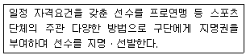
- 자유계약제도
- 드래프트제도
- 팜시스템
- 샐러리 캡
(정답률: 69%)
31. 유동성비율에 대한 설명으로 틀린 것은?
- 조직의 단기채무지급능력을 측정하는데 사용된다.
- 유동비율은 유동부채를 유동자산으로 나눈 비율이다.
- 유동비율이 높을수록 조직의 단기채무지급 능력은 양호하다고 할 수 있다.
- 당좌비율은 유동성이 떨어지는 재고자산을 제외하고도 얼마나 단기채무를 갚을 수 있는가를 나타낸다.
(정답률: 42%)
32. 다음 ()에 알맞은 것은?
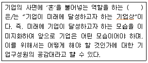
- 미션
- 비전
- 사업포트폴리오
- 성장벡터
(정답률: 70%)
33. 승강제를 도입하고 있는 스포츠 이벤트는?
- MLB
- KBL
- NFL
- EPL
(정답률: 72%)
34. 다음은 어떤 경영정보시스템에 관한 설명인가?
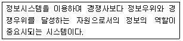
- TPS(transaction processing system)
- EIS(executive information system)
- SIS(strategic information system)
- DSS(decision support system)
(정답률: 49%)
35. 다음 조건을 모두 만족하는 투자결정기법은?
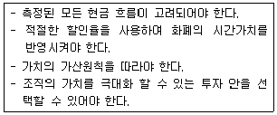
- 회수기간법
- 회계적이익률법
- 내부수익률법
- 순현가법
(정답률: 53%)
36. Blau와 Scott(1962)은 “조직의 수혜자”라는 관점에서 조직의 유형을 분류하고 있다. 이에 따른 스포츠조직에서 이용자가 주된 수혜자일 때 조직 유형은?
- 호혜조직
- 사업조직
- 서비스조직
- 공익조직
(정답률: 55%)
37. 스포츠 이벤트의 부정적 효과와 가장 거리가 먼 것은?
- 불필요하고 중복적인 행정력 소모
- 세대간의 이질감 형성
- 교통혼잡 및 도시 과밀화 촉진
- 사고발생 위험의 증가
(정답률: 62%)
38. 변혁적 리더십의 특성과 가장 거리가 먼 것은?
- 카리스마(이상적 영향력)
- 영감적 동기부여
- 성과에 대한 보상
- 지적인 자극
(정답률: 54%)
39. 대규모 경기장, 스포츠 센터 등과 같은 프로젝트들은 상호 관련된 수많은 작업들로 구성되어 있어 규모가 클수록, 설립하고자 하는 시설이 복잡할수록 적절한 관리가 필요하다. 이러한 복잡하고 규모가 큰 프로젝트의 일정계획 및 통제를 위해 개발된 대표적인 일정관리 기법은?
- 간트도표
- PRET/CPM
- TQM
- ERM
(정답률: 57%)
40. 다음 Ansoff가 제시한 제품과 시장의 매트릭스 모델의 ()에 알맞은 것은?
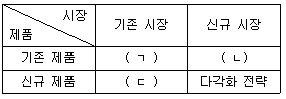
- ㄱ : 시장침투전략, ㄴ : 시장개발전략, ㄷ : 제품개발전략
- ㄱ : 시장개발전략, ㄴ : 시장침투전략, ㄷ : 제품개발전략
- ㄱ : 시장침투전략, ㄴ : 제품개발전략, ㄷ : 시장개발전략
- ㄱ : 제품개발전략, ㄴ : 시장개발전략, ㄷ : 시장침투전략
(정답률: 62%)
41. 다음 사례에 해당하는 직무분석 방법은?
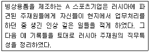
- 관찰법
- 작업자 중심법
- 작업일지법
- 결정적 사건법
(정답률: 51%)
42. Porter의 본원적 경쟁전략 중 비용우위전략(cost leadership strategy)에서 비용의 차이를 발생시키는 요인과 가장 거리가 먼 것은?
- 디자인의 차별화
- 적정규모의 설비
- 학습 및 경험곡선 효과
- 경비에 대한 엄격한 통제
(정답률: 38%)
43. 다음 재무상태표의 항목을 토대로 게산한 자본은?
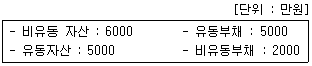
- 3000만 원
- 4000만 원
- 5000만 원
- 6000만 원
(정답률: 63%)
44. 스포츠조직의 인적자원에 대한 설명으로 틀린 것은?
- 인적자원은 자금이나 물자와 같은 물적자원과 함께 경영활동의 중요한 요소이며, 인적자원은 물적자원을 이용하여 경영활동을 이끌어가는 경영주체로서의 성격을 가지고 있다.
- 인적자원관리는 필요한 인력을 확보하고 이들의 능력을 최대한 개발하여 조직의 목표를 달성하고, 아울러 개인의 성장과 발전을 위한 관리 활동을 말한다.
- 인적자원관리의 궁극적인 목표는 개인과 조직의 목표가 동시에 달성되는 방향으로 나아가는 이른바 목표의 통합에 있다고 할 수 있다.
- 인적자원관리에서는 조직에 있어서 사람을 가치 있는 투자자산으로 보지 않고 반드시 관리하여야 할 비용요소로 인신한다.
(정답률: 68%)
45. 생산계획의 종류 중 증기계획으로써 계획 내에 변화하는 수요를 가장 경제적으로 충족시킬 수 있도록 스포츠기업이 보유한 생산능력의 범위 내에서 생산수준, 고용수준, 재고수준, 하청수준 등을 결정하는 것은?
- 총괄생산계획
- 능력소요계획
- 자재소요계획
- 생산일정계획
(정답률: 60%)
46. 스포츠경영자원에 대한 설명으로 틀린 것은?
- 스포츠 경영에는 물적 자원 뿐 아니라 인적 자원도 필요하다.
- 오늘날 급격한 환경변화로 인해 정보 자원의 중요성이 커지고 있다.
- 스포츠 경영자원이 충분히 확보된다면 자원에 대한 조정활동은 필요 없다.
- 스포츠 경영에서 자원은 제한적이기 때문에 효율적으로 관리해야 한다.
(정답률: 73%)
47. 스포츠기업의 경영환경에 대한 설명으로 틀린 것은?
- 스포츠기업의 환경을 내부환경과 외부환경으로 구분할 때 주주는 외부환경에 속한다.
- 스포츠기업의 간접환경(일반환경)에는 정치ㆍ법률적 환경, 경제적 환경, 기술적 환경 등이 있다.
- 스포츠기업에 노동력을 공급하는 종업원도 환경요인 중 하나이다.
- 스포츠기업의 경쟁자나 원자재 공급자는 직접환경(과업환경) 요인이다.
(정답률: 50%)
48. 투자안의 평가방법 중 회수기간법의 장점과 가장 거리가 먼 것은?
- 회수기간의 계산이 간편하다.
- 회수기간 이후의 현금흐름까지 고려한다.
- 회수기간이 짧은 투자안을 선택하게 함으로써 기업의 유동성을 향상시킨다.
- 회수기간이 짧은 투자안을 선택하게 함으로써 미래의 불확실성을 일부 감소시킬 수 있다.
(정답률: 48%)
49. 조직의 라이프사이클을 형성기, 성장기, 중년기, 장년기로 구분할 때 다음 설명에 해당 하는 것은?
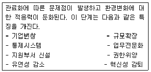
- 형성기
- 성장기
- 중년기
- 장년기
(정답률: 63%)
50. 스포츠경영에 대한 설명으로 틀린 것은?
- 스포츠경영의 지도원리에는 수익성과 생산성이 있다.
- 스포츠경영은 효과성을 추구하는데 이는 조직의 목표달성과 관련된다.
- 스포츠경영은 계획→평가→실행이라는 일련의 단속적인 활동이다.
- 스포츠경영은 효율성을 추구하는데 이는 자원비용의 최소화와 관련된다.
(정답률: 61%)
3과목: 스포츠 마케팅론
51. 브랜드 자산이 기업의 가치에 주는 효과에 대한 설명으로 틀린 것은?
- 새로운 고객을 창출하거나 기존 고객 확보에 도움이 된다.
- 상품 가격을 낮춰줌으로써, 매출이 늘어나는데 도움을 준다.
- 브랜드에 대한 충성도를 강화시켜 준다.
- 경쟁자들에게 장벽이 되어 경쟁 우위를 제공한다.
(정답률: 65%)
52. 스폰서가 아닌 기업들이 간접적인 표현을 통해 마치 공식스폰서 기업으로 착각을 일으켜 공식스폰서가 얻는 것과 같은 효과를 얻고자 하는 마케팅 활동은?
- 내부(Intemal)마케팅
- TOP(The Olympoic Partners)프로그램
- 관계(Relationship)
- 매복(Ambush)마케팅
(정답률: 64%)
53. 스포츠마케팅의 촉진(promotion)에 관한 설명으로 틀린 것은?
- 촉진은 스포츠마케터가 다른 마케팅믹스요인에 대한 정보를 제공하여 소비자가 제품을 구매하도록 하는 마케팅전략이다.
- 촉진은 스포츠제품과 제품의 이미지를 소비자들에게 위치화 시키는 중요한 요인이다.
- 촉진은 제품의 인지, 태도변화, 구매를 유도하는 마케팅 전략이다.
- 특정 제품의 촉진에 있어 광고, 홍보, 대인판매 그리고 판매촉진 중 가장 효과적인 촉진방법만을 활용해야 한다.
(정답률: 55%)
54. 단일 세분시장전략(single-segment strategy)이라고도 하며, 전체시장에서 낮은 점유율을 추구하기 보다는 특정한 단일 세분시장에 주력하는 마케팅 전략은?
- 집중적 마케팅 전략
- 차별적 마케팅 전략
- 무차별 마케팅 전략
- 편익세분화 전략
(정답률: 61%)
55. 스포츠 에이전트의 필요성과 가장 거리가 먼 것은?
- 에이전트는 선수로 하여금 운동에만 전념할 수 있게 하여 경기력 향상에 도움을 주기 때문에 필요하다.
- 에이전트는 선수들의 부족한 법률 지식을 가르쳐 주기 때문에 필요하다.
- 에이전트는 선수보증광고 가치를 증진시켜 주기 때문에 필요하다.
- 에이전트는 선수의 이미지를 효과적으로 관리해 주기 때문에 필요하다.
(정답률: 58%)
56. 스포츠제품의 상표전략 중 계열확장(line extension)에 관한 설명으로 옳은 것은?
- 기존의 상표면을 기존의 제품범주의 새로운 형태, 크기 등에 확대한다.
- 기존의 상표면을 새로운 제품범주로 확대한다.
- 새로운 상표면을 동일한 제품범주에 도입한다.
- 신제품 범주에 새로운 상표면을 부여한다.
(정답률: 46%)
57. 다음 ()안에 알맞은 스포츠 마케팅의 핵심 개념은?
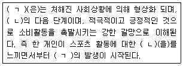
- ㄱ : 욕구(wants), ㄴ : 필요(needs)
- ㄱ : 필요(needs), ㄴ : 교환(exchange)
- ㄱ : 수요(demands), ㄴ : 욕구(wants)
- ㄱ : 교환(exchange), ㄴ : 거래(transactions)
(정답률: 59%)
58. 특정 프로구단이 평균관중이 가장 적은 요일의 관람권가격을 20%할인 판매하기로 했다면 이는 어떤 가격정책에 속하는가?
- 원가지향 가격설정
- 경쟁지향 가격설정
- 차별 가격정책
- 표적 가격설정
(정답률: 53%)
59. 올림픽과 TV방송에 관한 설명으로 틀린 것은?
- 1936년 베를린 올림픽에서 처음으로 TV야외중계방송을 시도하였다.
- IOC는 1960년 로마 올림픽에서 처음으로 TV방송중계권을 판매하였다.
- 1972년 뮌헨 올림픽에서 처음으로 컬러로 방송되었다.
- 1984년 LA 올림픽에서 방송중계권 프로그램은 LA 올림픽을 흑자 올림픽으로 이끄는데 기여했으며, TOP프로그램의 핵심적인 부분을 차지하고 있다.
(정답률: 45%)
60. 국내외 기업들이 올림픽, 월드컵 등의 스포츠이벤트에 적극적으로 투자하는 이유와 가장 거리가 먼 것은?
- 스포츠가 지난 긍정적인 이미지를 활용하기 위해서이다.
- 올림픽 및 월드컵 중계방송의 시청자에게 접근하기 위해서이다.
- 기업이익을 사회에 환원하는 자선사업의 수단이기 때문이다.
- 기업인지도 제고를 위한 유력한 수단이기 때문이다.
(정답률: 70%)
61. 상표 등록된 재산권을 가지고 있는 개인 또는 단체가 타인에게 대가를 받고 그 재산권을 사용할 수 있도록 상업적 권리를 부여하는 계약을 뜻하는 용어는?
- 스폰서십
- 공식후원
- 상표특허
- 라이센싱
(정답률: 67%)
62. 기존의 제품이나 프로그램을 수정이나 변형시키지 않고 기존 표적시장에서 소비자들의 참가를 증진시키려는 전략은?
- 시장침투
- 프로그램 개발
- 시장개발
- 프로그램 다각화
(정답률: 56%)
63. 스포츠스폰서를 참여하는 유형에 따라 분류했을 때 그 성격이 다른 하나는?
- 공식스폰서
- 타이틀스폰서
- 공식공급업체
- 공식상품화권자
(정답률: 50%)
64. 스포츠마케팅조사에서 사용하는 측정의 수준과 가장 거리가 먼 것은?
- 서열측정
- 명목측정
- 등간측정
- 비교측정
(정답률: 41%)
65. 스포츠경기에 대한 만족도를 조사하기 위한 기술조사(descriptive research)의 형태 중 성격이 다른 하나는?(오류 신고가 접수된 문제입니다. 반드시 정답과 해설을 확인하시기 바랍니다.)
- 패널조사(panel study)
- 추세조사(trend tudy)
- 코호트조사(cohort tudy)
- 사례조사(case study)
(정답률: 25%)
66. 프로스포츠 구단에서 실시하는 마케팅조사 및 활용 분야와 가장 거리가 먼 것은?
- 촉진전략
- 스포츠이벤트 스폰서십 참여효과 분석
- 라이센싱/머천다이징 전략수립
- 선수활용 효과
(정답률: 33%)
67. 다음 중 인과조사에 해당하는 것은?
- 스포츠용품 판매원을 대상으로 실시한 서비스 교육 실시에 따른 고객만족도 변화 조사
- 신제품에 대한 지역별 매출액 실태 조사
- 경쟁사의 스포츠제품과 당사의 스포츠제품의 선호도 비교 조사
- 우수 스포츠기업의 사례연구를 통한 성공요인 조사
(정답률: 55%)
68. 스포츠제품의 수명주기에 관한 설명으로 틀린 것은?
- 창조기는 제품에 대한 아이디어를 구상하고 연구개발을 하는 시기이다.
- 도입기는 제품이 처음 시자에 출시되는 시기이다.
- 성장기는 소비자들이 제품에 대해서 어느 정도 탐색을 마쳤기 때문에 판매가 급속히 증가하는 시기이다.
- 성숙기는 제품이 대부분의 잠재적 소비자에게 수용됨으로써 매출성장률이 둔화되는 시기이다.
(정답률: 43%)
69. 월드컵 TV방송 프로그램의 구조에 관한 설명으로 틀린 것은?
- FIFA는 방송중계권료를 받는 대신 중계권을 제공한다.
- 방송사는 스폰서로부터 광고비를 받고 광고효과를 제공한다.
- 공식스폰서는 FIFA에 비용을 지분하고 FIFA는 방송사에 공식스폰서의 광고계약을 한다.
- 기업은 촉진효과를 기대하고 FIFA에 스폰서십 비용을 지불한다.
(정답률: 53%)
70. 나이키, 아디다스, 노스페이스 등의 특정 스포츠기업이 자사의 제품이 경쟁사 제품들로부터 식별이 되고 차별화되도록 하기 위하여 사용하는 문자, 도형, 기호, 상징, 디자인, 색채 또는 이들의 조합을 의미하는 것은?
- 상표
- 제품
- 무형성
- 자산
(정답률: 68%)
71. 스포츠 소비자 중심적 가격결정 요인에 해당하는 것은?
- 스포츠제품의 수요 탄력성
- 경쟁자의 스포츠제품가격
- 스포츠제품의 생산원가
- 스포츠제품의 수명주기
(정답률: 48%)
72. 스포츠 스폰서십의 효과측정 유형과 가장 거리가 먼 것은?
- 스포츠 경기 성적 측정
- 매체노출량 측정
- 소비자 태도변화 측정
- 스폰서십에 따른 매출액 변화 측정
(정답률: 58%)
73. 스포츠마케팅을 ‘스포츠의 마케팅(marketing of sport)와 ’스포츠를 이용한 마케팅(marketing through sport)'으로 구분할 때, ‘스포츠의 마케팅’ 주체와 가장 거리가 먼 것은?
- 선수
- 기업
- 팀/구단
- 스포츠조직
(정답률: 60%)
74. 스포츠마케팅조사를 위한 표본추출과정을 바르게 나열한 것은?
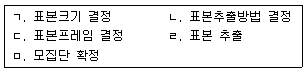
- ㄱ→ㄴ→ㄷ→ㄹ→ㅁ
- ㄱ→ㄴ→ㄷ→ㅁ→ㄹ
- ㅁ→ㄷ→ㄴ→ㄱ→ㄹ
- ㅁ→ㄱ→ㄷ→ㄴ→ㄹ
(정답률: 35%)
75. 다음 중 라이센싱의 기대효과에 대한 설명으로 틀린 것은?
- 기업이 라이센싱 프로그램에 참여하는 가장 큰 이유는 라이센싱 수수료(Licensing commission) 수입을 증대시키는 것이다.
- 스포츠 단체는 라이센싱 프로그램을 통해 더 많은 기업과 파트너 관계를 형성할 수 있다.
- 기업이 라이센싱 프로그램에 참여하면, 자사의 브랜드 가치가 낮더라도 라이센서가 가진 높은 명성이나 신용에 편승하여 상업적 신용혜택을 얻을 수 있다.
- 기업은 IOC나 FIFA와 같은 스포츠단체가 구축한 마케팅 채널을 이용할 수 있다.
(정답률: 49%)
4과목: 스포츠 시설론
76. 다음에 해당하는 체육시설 안전점검의 기준은?
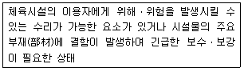
- 양호
- 수리 필요
- 이용제한 필요
- 사용중지 필요
(정답률: 56%)
77. 국내 프로야구 경기장 내 수입원과 가장 거리가 먼 것은?
- 입장수입
- 중계권 판매
- 식음료 판매
- 기념품 판매
(정답률: 60%)
78. 참여스포츠산업의 환경변화에 대응하기 위해서 스포츠시설업체가 이미지 제고 및 변모를 시도하려고 할 때 우선적으로 중점을 두어야 할 활동으로 가장 적합한 것은?
- PR(Public Relations) 활동
- SP(Sales Promotion) 활동
- 내부 프로모션(Inter Promotion) 활동
- 스폰서십 유치 활동
(정답률: 61%)
79. 스포츠시설 입지의 고려요인과 가장 거리가 먼 것은?
- 소비자의 접근용이성
- 조직구성원의 임파워먼트(empowerment)
- 경쟁자의 위치
- 인력과 지역사회 발전 정도
(정답률: 65%)
80. 왕포아폴이라고도 부르며, 잎이 가늘고 연하여 한지형 잔디 중 가장 널리 이용되며 서늘한 기후에서 생육이 왕성하고 회복력이 빨라 골프장의 TEE에 라이크라스와 혼파하여 주로 시공하는 잔디 품종은?
- 켄터키 블루그라스
- 크리핑 벤트그라스
- 버뮤다 그라스
- 금잔디(중지)
(정답률: 51%)
81. 체육시설의 설치ㆍ이용에 관한 법령상 생활체육시설에 대한 설명으로 틀린 것은?
- 국가와 지방자치단체는 읍ㆍ면ㆍ동에 지역 주민이 고루 이용할 수 있는 실내ㆍ외 체육시설을 생활체육시설로 설치ㆍ운영하여야 한다.
- 국가와 지방자치단체는 국민이 거주지와 가까운 곳에서 이용할 수 있는 생활체육시설을 설치ㆍ운영하여야 한다.
- 생활체육시설을 운영하는 국가와 지방자치단체는 장애인이 생활체육시설을 쉽게 이용할 수 있도록 시설이나 기구를 마련하는 등의 필요한 시책을 강구하여야 한다.
- 생활체육시설의 사용을 촉진하기 위하여 그 사용료의 전부나 일부를 감면할 수 있다.
(정답률: 34%)
82. 뉴 스포츠의 분류로 적합하지 않은 것은?
- 수출형
- 개량형
- 개발형
- 수입형
(정답률: 46%)
83. FCB Grid 모델에서 엄격히 회원관리가 이루어지는 고가의 골프장회원권, 고가의 다기능 휘트니스기구 등이 해당하는 공간은?
- 저관여/감성공간
- 저관여/이성공간
- 고관여/감성공간
- 고관여/이성공간
(정답률: 49%)
84. 신고 체육시설업의 회원모집 시기에 대한 설명으로 옳은 것은?
- 해당 체육시설업의 시설설치공사를 시작할 때 회원모집이 가능하다.
- 해당 체육시설업의 시설설치공사의 공정이 30% 이상 진행된 이후 회원모집이 가능하다.
- 해당 체육시설업의 시설설치공사의 공정이 완료된 이후 회원모집이 가능하다.
- 해당 체육시설업의 신고를 한 이후 회원모집이 가능하다.
(정답률: 47%)
85. 참여스포츠시설의 운영방침 수립 시 유의해야 할 사항과 가장 거리가 먼 것은?
- 운영방침은 경영자 입장에서 수익을 고려하여 수입되어야 한다.
- 일부 이용자들의 전유물이 되지 않도록 하여야 한다.
- 시설의 기능이 충분히 발휘될 수 있도록 해야 한다.
- 이용요금 및 이용시간이 이용자 중심에 맞도록 적절하여야 한다.
(정답률: 56%)
86. 공공 스포츠시설 위탁 운영의 장점이 아닌 것은?
- 인건비 등 유지관리를 위한 경비가 절감될 수 있다.
- 행정기관측의 시설운영 방안 등을 직접 주민에게 전하는데 수월하다.
- 이른 아침, 야간, 휴일 개관 등 시설의 탄력적인 운영으로 시설 설비의 효율적 운영을 할 수 있다.
- 스포츠시설 운영 관련 유경험자나 전문가의 뛰어난 지식이나 기술을 활용하기 쉽다.
(정답률: 46%)
87. 요트장업의 시설기준으로 틀린 것은?
- 3척 이상의 요트를 갖추어야 한다.
- 요트를 안전하게 보관할 수 있는 계류장(繫留場)과 요트보광소를 각각 갖추어야 한다.
- 긴급해난구조용 선박 1척 이상 및 요트장을 조망할 수 있는 감시탑을 갖추어야 한다.
- 요트 내에는 승선인원 수에 적정한 구명대를 갖추어야 한다.
(정답률: 36%)
88. 다음 중 스포츠시설 소비자의 욕구와 해당 시설 이용 고객 만족을 위해 고려해야 할 요소가 아닌 것은?
- 공급자 위주의 가격 책정고 적용
- 이용 공간의 충분한 확보
- 이용고객의 목적에 따른 프로그램 및 지도자 배치
- 다양한 운동 시설의 구비
(정답률: 63%)
89. 다음 중 체육시설업을 등록 체육시설업과 신고 체육 시설업으로 구분할 때 다른 하나는?
- 골프장업
- 스키장업
- 승마장업
- 자동차 경주장업
(정답률: 53%)
90. 손해보험에 가입한 등록체육시설업자는 손해보험 가입 사실을 증명하는 서류를 누구에게 제출해야 하는가?
- 특별자치도지사ㆍ시장ㆍ군수 또는 구청장
- 문화체육관광부장관
- 대한체육회장
- 시ㆍ도지사
(정답률: 47%)
91. 참여스포츠시설의 회원관리 프로그램 활용방안과 가장 거리가 먼 것은?
- 신규 창출 고객 수 예측
- 판매촉진 및 마케팅 방향 설정
- 참가자의 시간대별 이용시간에 대한 분석
- 매출에 대한 추이분석을 통해 경영 전략 수립
(정답률: 43%)
92. 다음 ()에 알맞은 것은?
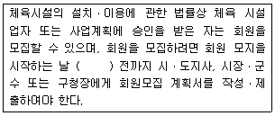
- 7일
- 10일
- 15일
- 30일
(정답률: 49%)
93. 스포츠시설 사업이 지역발전에 미치는 간접효과와 가장 거리가 먼 것은?
- 입장료 수입, 광고수입, 부대수입의 효과
- 지역민의 자긍심과 연결되는 상징적 효과
- 개최도시에 생기는 새로운 역량인 사회ㆍ정치적인 효과
- 지역개발이 효과적으로 이루어지는 경제적인 효과
(정답률: 54%)
94. 스포츠시설관리에 있어 사무전산화를 통해 얻는 효과와 가장 거리가 먼 것은?
- 독창성
- 정확성
- 신속성
- 경제성
(정답률: 67%)
95. 무도학원업자ㆍ무도창업자의 준수 사항에 대한 설명으로 틀린 것은?
- 공연이나 무대연주를 위한 시설을 설치할 수 없다.(무도장업자만 해당함)
- 업소에서 주류를 판매하거나 제공할 수 없다.
- 업소에서 음식물을 판매할 수 없으나 제공할 수는 있다.
- 업소에서 자동판매기기에 의한 음료수의 판매는 가능하다.
(정답률: 47%)
96. 체육시설업의 종류에 따른 체육지도자 배치기준으로 틀린 것은?
- 골프장업(골프코스 36홀 초과) : 2명 이상
- 스키장업(슬로프 10면 이하) : 2명 이상
- 요트장업(요트 20척 이하) : 1명 이상
- 빙상작업(빙판명적 3,000제곱미터 초과) : 2명 이상
(정답률: 45%)
97. 지역특성별 스포츠시설 설치 시 고려해야 할 사항이 아닌 것은?
- 지역특성에 적합한 운동종목 선택
- 이용고객 예측에 따른 규모의 설정
- 고정적인 가격정책으로 이용자의 신뢰 확보
- 소비자의 이용시간대 및 선호 프로그램 조사
(정답률: 56%)
98. 수영장업에 대한 안전ㆍ위생 기준으로 틀린 것은?
- 수영조에서 동시에 수영할 수 있는 인원은 도약대의 높이ㆍ수심ㆍ수영조의 면적 및 수상안전시설의 구비 정도 등을 고려하여 특별자치도지사ㆍ시장ㆍ군수 또는 구청장이 정하는 인원을 초과하지 아니하도록 한다.
- 개장 중인 실외 수영장에는 「의료법」에 따른 간호사 또는 「간호조무사 및 의료유사업자에 관한 규칙」에 따른 간호조무사 1명 이상을 배치하여야 한다.
- 수영조의 욕수(浴水)는 1일 3회 이상 여과기를 통과하도록 하여야 한다.
- 욕수의 조절, 침절물의 유무 및 사고의 유무를 확인하기 위하여 3시간마다 수영조 안의 수영자를 밖으로 나오도록 하고, 수영조를 점검하여야 함이 원칙이다.
(정답률: 50%)
99. 국내 프로스포츠 구단 중 구장명칭권(Stadium Naming Rights) 활용의 일환으로 역명부기권을 계약하여 사용한 최초의 구단은?
- 롯데 자이언츠
- LG 트윈스
- SK 와이번스
- FC 서울
(정답률: 57%)
100. 체육시설의 설치ㆍ이용에 관한 법규상 체육시설업의 공통기준으로써 제시된 등록 체육시설업의 필수시설로 설치되어야 하는 것이 아닌 것은? (단, 다른 시설물과 공동으로 사용하는 경우는 고려하지 않는다.)
- 수용인원에 적합한 주차장
- 수용인원에 적합한 관람석
- 수용인원에 적합한 급수시설
- 매표소, 사무실, 휴게실 등 해당 체육시설의 유지ㆍ관리에 필요한 시설
(정답률: 53%)
설명: 스포츠입장권 가격은 일반적으로 시즌별, 경기장별, 좌석 등급별로 구분되어 있으며, 이러한 구분은 매우 명확하고 체계적으로 이루어져 있다. 따라서 가격을 조정하거나 새로운 가격 체계를 도입하는 것이 비교적 쉽다. 이는 시장 상황에 따라 적극적으로 대응할 수 있게 해주는 장점을 가지고 있다.